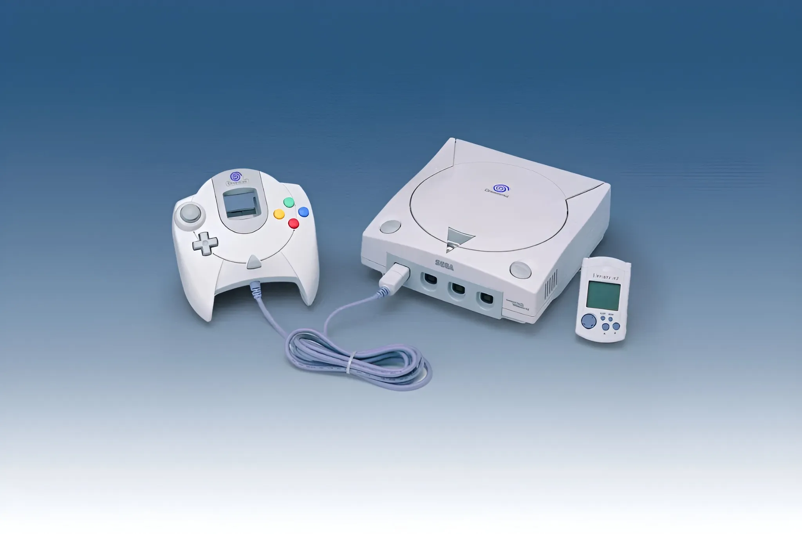

The Future That Arrived Early
The Dreamcast launched on 9/9/99 in the West, representing Sega's final attempt to reclaim the hardware throne. It introduced online gaming years before it became standard.

The Origin
NAOMI Architecture
Sharing architecture with the NAOMI arcade board, it delivered pixel-perfect versions of SoulCalibur.
The Peak
Online Frontier
Equipped with a 56k modem, Phantasy Star Online proved the future was connected.
The Demise
End of an Era
In 2001, Sega announced they would stop making hardware forever.
Pro Tip for Collectors
Look for "MIL-CD" compatible units manufactured before Oct 2000 to run homebrew easily.